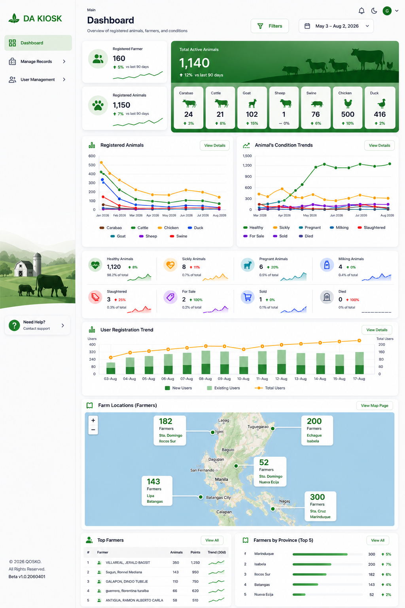

Nueva Ecija · Isabela · Ilocos · Batangas · Marinduque
Digital Agriculture of the Philippines turns soil readings, weather patterns, and market signals into decisions a farmer or cooperative can act on before the next planting season — not after the harvest is already lost.
"Farming decisions used to wait for the barangay meeting. Ours wait for the data."
One Person Corporation, registered PH
How we work
Low-cost soil, moisture, and weather sensors deployed field-by-field, plus satellite imagery for the plots we can't wire up yet. Every reading is timestamped and geotagged to the actual parcel.
Yield and pest-risk models trained on Philippine crop cycles, not imported defaults — a palay model that actually knows what a wet-season typhoon does to a Nueva Ecija paddy.
SMS and app alerts in Filipino and regional dialects, routed through cooperative extension workers who already have the farmer's trust — the tech stays behind the person, not in front.
Where we've worked
1,240
Farms with active field data
4
Provinces under coverage
18%
Avg. yield gain, pilot cohort
37
Cooperatives onboarded
Figures from pilot deployments, 2024–2026. Illustrative — request our latest impact report for verified data.
Focus areas
Irrigation timing and pest-pressure alerts across wet and dry season plantings.
Flower-induction and harvest-window forecasting for export-grade fruit.
Long-cycle yield tracking and intercropping recommendations for smallholders.
Soil nutrient mapping tied directly to milling schedules.
Livestock & farmers
Crop data tells half the story for most smallholder households — the other half is walking around the backyard pen. We track livestock health and connect the farmers behind both.
Early disease-outbreak alerts for backyard and small commercial raisers, built after repeated ASF and avian flu losses across Luzon.
Feeding and breeding schedules paired with the same weather data driving the crop-side advisories, since both share the same farm calendar.
Every household we work with is profiled once — land, herd, and crop — so advisories arrive relevant instead of generic.
2,900
Farmer households profiled
6,100
Livestock heads under monitoring
62%
Households raising both crops and livestock
Figures from pilot deployments, 2024–2026. Illustrative — request our latest impact report for verified data.
Innovations
Some of these are already in the field, others are pilots — all are being tested with real cooperatives before they go anywhere near a wider rollout.
Low-altitude multispectral flyovers flag stressed or flooded sections of a field days before they're visible from the paddy edge.
Off-grid soil and weather stations built for areas without reliable power, reporting over low-bandwidth cellular links.
Farm-to-buyer product tracing for export-grade mango and coconut, giving smallholders proof of origin buyers pay a premium for.
A call-in line for farmers without smartphones — ask a question in Filipino or a regional dialect, get an answer grounded in local field data.
QOSKO PLATFORM
A centralized dashboard for monitoring registered farmers, livestock records, animal conditions, user activity, and farm locations across the Philippines.

Pitch an idea
We work with founders, researchers, and agri-tech students who have a working idea — a sensor, a model, a distribution channel — and want to test it with real cooperatives instead of a lab.
Prefer email? Write to digitalagriphil@gmail.com
We onboard one province at a time so the models stay accurate to that soil and season. Tell us where you farm and what you're growing.
Digital Agriculture of the Philippines OPC